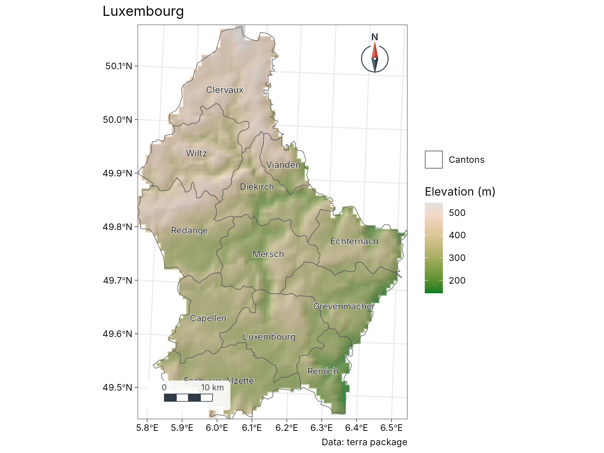

1. Install and run tidymapr in RStudio
guide-01-install.RmdThis chapter takes you from an empty computer to a finished, saved map. It needs no previous experience of R. If you already use R, skip to Install tidymapr.
What you need
| Software | What it is | Where to get it |
|---|---|---|
| R (4.1 or newer) | The language that runs the analysis | https://cran.r-project.org |
| RStudio Desktop | The program you type and run code in | https://posit.co/download/rstudio-desktop/ |
| Build tools | Compile tidymapr’s fast C++ code | See the table below |
| tidymapr | This package | From GitHub, below |
tidymapr is installed from its source code on GitHub until it is on CRAN, so your computer has to compile its C++ code once. That needs the build tools for your operating system:
| Operating system | Install once | How to check it worked |
|---|---|---|
| Windows | Rtools matching your R version, from https://cran.r-project.org/bin/windows/Rtools/ (accept the defaults) |
pkgbuild::has_build_tools(debug = TRUE) returns
TRUE
|
| macOS | Apple’s command-line tools: run xcode-select --install
in the Terminal app |
Same check as Windows |
| Ubuntu or Debian Linux | sudo apt install build-essential libgdal-dev libgeos-dev libproj-dev libudunits2-dev |
Same check as Windows |
| Fedora Linux | sudo dnf install gcc-c++ gdal-devel geos-devel proj-devel udunits2-devel |
Same check as Windows |
On Windows and macOS the spatial libraries (GDAL, GEOS, PROJ) come
inside the CRAN binaries of sf and
terra, so the build tools are all you need. On Linux,
the -dev libraries above let sf and terra compile.
Install tidymapr
Open RStudio and type these lines in the Console pane (bottom left), pressing Enter after each:
install.packages("pak")
pak::pak("jmozez/tidymapr")pak installs tidymapr and every package it needs. Then add the optional spatial packages; most of this guide uses them:
install.packages(c("sf", "terra", "patchwork", "ggnewscale", "geomtextpath", "mgcv"))For biodiversity maps, also install the companion package tidydiversity:
pak::pak("jmozez/tidydiversity")Check the installation:
library(tidymapr)
packageVersion("tidymapr")
#> [1] '0.1.0'If library(tidymapr) gives no error, you are ready.
Work in an RStudio project
A project keeps your data, scripts and figures together, and makes file paths work on any computer.
-
File → New Project → New Directory → New Project.
Name it, for example,
my-maps. - Make three folders inside it:
data/,R/andfigures/. -
File → New File → R Script, save it as
R/first-map.R. - Type code in the script (top left), and run a line with Ctrl + Enter (Windows, Linux) or Cmd + Enter (macOS). Run the whole script with Ctrl/Cmd + Shift + S.
Maps appear in the Plots pane (bottom right). Click Zoom there to see them full size.
Your first map
This map uses elevation and administrative boundaries of Luxembourg that come with the terra package, so it works without downloading anything.
library(tidymapr)
# 1. Read the data
elev <- terra::rast(system.file("ex/elev.tif", package = "terra"))
cantons <- sf::st_read(system.file("ex/lux.shp", package = "terra"), quiet = TRUE)
# 2. Build the map in layers
geo_map(title = "Luxembourg", caption = "Data: terra package") |>
map_raster(elev, name = "Elevation (m)", palette = "Terrain 2", hillshade = TRUE) |>
map_polygons(cantons, fill = NA, label = "Cantons") |>
map_labels(cantons, text = NAME_2)
What each line does.
| Code | Meaning |
|---|---|
terra::rast() |
Reads a raster: a grid of cells, each with a value (here, elevation in metres) |
sf::st_read() |
Reads vector data: points, lines or polygons with attributes (here, 12 cantons) |
geo_map() |
Starts an empty map; sets the title, projection, scale bar and north arrow |
\|> |
The pipe: “then”. Each map_*() adds a layer on top of
the previous one |
map_raster() |
Draws the elevation grid with a colour ramp and shaded relief
(hillshade = TRUE) |
map_polygons(fill = NA) |
Draws the canton outlines only |
map_labels() |
Writes a column (NAME_2, the canton name) at each
polygon |
Layers are drawn in the order you add them, so later layers sit on top.
Your own data
Most field data arrive as a spreadsheet with longitude and latitude
columns. Save it as CSV in data/, then:
sites <- read.csv("data/sites.csv") # columns: site, lon, lat, value
sites <- sf::st_as_sf(sites, coords = c("lon", "lat"), crs = 4326)
geo_automap(sites, value) # a finished map in one linecrs = 4326 says the coordinates are longitude and
latitude on the WGS84 datum, as recorded by GPS units and phones. If
your coordinates are in metres (UTM), use the EPSG code of your zone,
for example crs = 32755 for UTM zone 55 South.
Other formats are read the same way:
| Data | Read with |
|---|---|
| Shapefile, GeoPackage, GeoJSON, KML |
geo_read("data/file.gpkg") or
sf::st_read()
|
| GeoTIFF, netCDF, HDF |
geo_raster_read("data/dem.tif") or
terra::rast()
|
| Excel |
readxl::read_excel(), then sf::st_as_sf()
as above |
| AutoCAD DXF | geo_read("data/plan.dxf") |
Save a map for a paper or poster
Every tidymapr map is a ggplot, so save it with
geo_save(), which knows journal sizes:
m <- geo_automap(sites, value)
geo_save(m, "figures/figure-1.png", width = 174, height = 120, units = "mm", dpi = 300)
geo_save(m, "figures/figure-1.pdf", width = 174, height = 120, units = "mm")| Use | Format | Size and resolution |
|---|---|---|
| Journal, full page width | PNG or TIFF at 300-600 dpi, or PDF | 174-180 mm wide |
| Journal, one column | Same | 84-90 mm wide |
| Poster | PDF (stays sharp at any size) | Your panel size |
| Slides, social media | PNG at 150-200 dpi | 1920 px wide |
Troubleshooting
| Message | Cause | Fix |
|---|---|---|
Could not find tools necessary to compile a package |
Build tools missing | Install Rtools (Windows) or xcode-select --install
(macOS), restart RStudio |
there is no package called 'sf' (or terra) |
Optional package not installed | install.packages(c("sf", "terra")) |
configure: error: gdal-config not found (Linux) |
GDAL development library missing | sudo apt install libgdal-dev libgeos-dev libproj-dev |
lazy-load database ... is corrupt |
Package updated while loaded |
Session → Restart R, then
library(tidymapr)
|
Error in ... : object 'value' not found |
Column name misspelt | Check names with names(sites)
|
| Map is empty or points are in the sea | Longitude and latitude swapped, or wrong crs
|
coords = c("lon", "lat"), longitude first |
| Plot pane says “figure margins too large” | Plots pane too small | Enlarge the pane, or click Zoom |
Getting help. Every function has a help page: type
?geo_map in the Console. Examples on that page run with
example(geo_map). Report bugs or ask questions at https://github.com/jmozez/tidymapr/issues.
Next
Chapter 2, Cartography concepts, explains projections, classes and colours, so you can defend every design choice in a map.